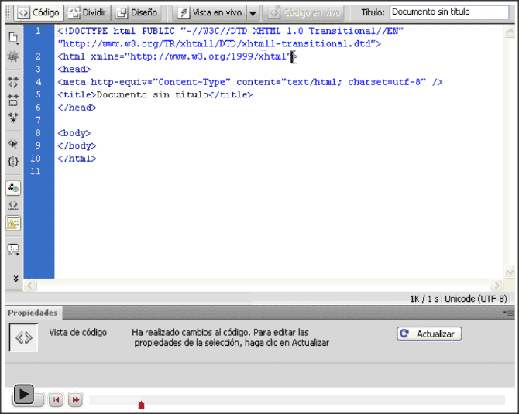

Guía de aprendizaje
Dreamweaver CS4
Tutorial 1. Crear una página web para alquilar un apartamento
Desarrollo del tutorial: paso 5 de 17
Hay un paso que Dreamweaver no hace de forma automática pero es imprescindible: indicar el idioma principal de nuestra página web. Debemos hacerlo en la vista de código y ponerlo en la etiqueta:
<html>Afortunadamente, Dreamweaver nos ayuda a hacerlo.
